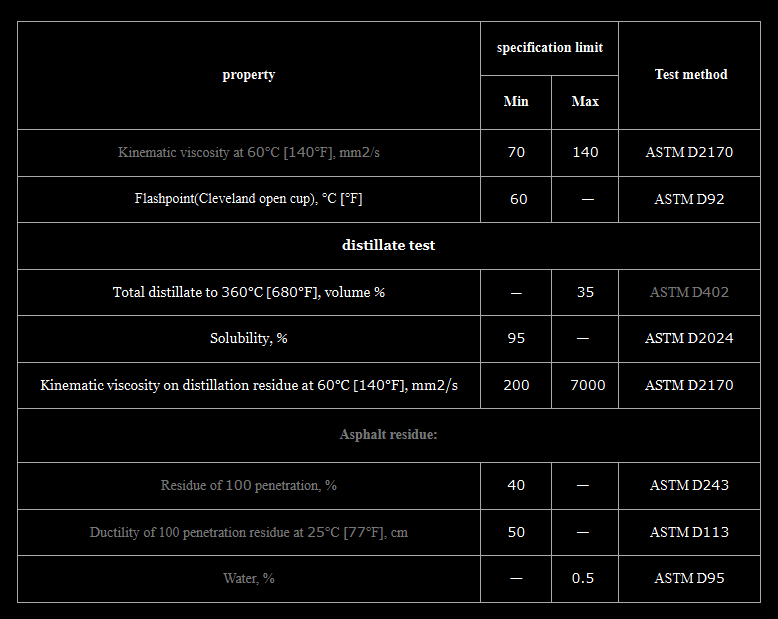

Cutback Bitumen SC‑70 – General Description │ Iran Bitumen Supply Int │ IBSI
Cutback Bitumen SC‑70 is a slow‑curing cutback asphalt produced by blending high‑quality penetration‑grade bitumen with low‑volatility petroleum distillates, typically gas oil or similar heavy oils. These solvents reduce the viscosity of the bitumen, allowing it to be applied at ambient temperatures while providing a much slower evaporation rate compared to rapid‑curing (RC) or medium‑curing (MC) grades. Slow‑curing cutbacks such as SC‑70 are often referred to as road oils due to their heavy composition and extended curing time. SC‑70 behaves similarly to residual refinery products like bunker fuel oils and is designed for applications requiring deep penetration, long working time, and strong binding of granular surfaces. At Iran Bitumen Supply Int │ IBSI, our SC‑70 is manufactured from premium vacuum residue feedstock and blended with carefully selected low‑volatility solvents to ensure consistent curing behavior. It complies with international standards for slow‑curing cutback petroleum asphalts and is suitable for a wide range of road construction and maintenance applications.
Understanding How SC‑70 Works
Cutback asphalt is produced by adding petroleum solvents to bitumen to make it liquid at ambient temperatures. In SC‑70, the solvent used is a less volatile distillate, which evaporates slowly. This slow evaporation allows the bitumen to remain workable for an extended period, making SC‑70 ideal for applications requiring deeper penetration and longer curing times. As the solvent gradually evaporates, the bitumen returns to its original viscosity and hardness. When properly formulated, SC‑70 provides excellent adhesion, long‑term durability, and strong waterproofing performance.
Applications of Cutback Bitumen SC‑70
Cutback Bitumen SC‑70 is widely used in road construction and maintenance, particularly in prime coats, patching materials, and stockpile asphalt mixes. Its slow curing properties make it ideal for stabilizing granular base courses before applying hot mix asphalt. SC‑70 penetrates deeply into the surface, fills capillary voids, and binds loose particles to create a strong, waterproof foundation. SC‑70 is also used in cold‑applied asphalt treatments, where heating equipment is not available or practical. Its ability to wet aggregates effectively makes it suitable for surface treatments, seal coats, and waterproofing applications. It is commonly applied to protect surfaces, bond mineral particles, and prepare non‑asphalt layers for further construction. Because SC‑70 does not require heating, it is especially useful in remote areas, rural road projects, and maintenance operations where simplicity and ease of application are essential.
Packing Options for Cutback Bitumen SC‑70
At Iran Bitumen Supply Int │ IBSI, SC‑70 is supplied in packaging formats designed for safe handling and efficient transport. It is available in new thick steel drums placed on pallets to prevent leakage during containerized shipping, as well as in bulk bitutainers and tanker trucks for large‑scale infrastructure projects. These packaging options ensure that the product arrives in optimal condition and is ready for immediate use.
Safety Guidelines for Handling SC‑70
SC‑70 contains petroleum solvents and must be handled with care. It should be transported, stored, and applied at the lowest practical temperature. All ignition sources must be eliminated during use due to the flammable nature of the solvents. Direct inhalation of vapors and skin contact should be avoided, and appropriate personal protective equipment must be worn at all times. The product and any washings must never be allowed to enter stormwater or sewer systems.

Specification of cutback bitumen SC-70